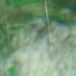
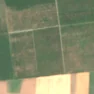

2,4 ha de pădure schimbată lângă Gura Văii
Între 31 mai 2026 și 10 iunie 2026, pe aproximativ 2,4 ha de pădure din comuna Sudiți, lângă Gura Văii, județul Ialomița, imaginile Sentinel-2 arată că vegetația a dispărut sau s-a schimbat puternic. E o schimbare care merită verificată.
Autorizația de tăiere
de confirmat pe poze
N-am găsit o autorizație care să acopere zona, dar nu putem spune ce s-a întâmplat aici: analistul AI fie n-a văzut încă pozele, fie le-a văzut și nu e sigur. Nu dăm roșu pe o bănuială, și nici nu spunem că e în regulă. Analistul n-a putut spune ce s-a întâmplat aici din poze. Rămâne de verificat cu o imagine mai bună.
Ce se vede în poze: În poza detaliată zona marcată pare o plantație deasă de arbori tineri, așezată în parcele regulate printre câmpuri, nu o pădure naturală. Poza «înainte» e acoperită de nori, iar în «după» zona arată întunecată, fără pământ gol sau margini tăiate clar, deci nu se poate spune sigur ce s-a întâmplat.


Înainte și după: Copernicus Sentinel-2, 10 m pe pixel, conturul zonei cu portocaliu. Poza detaliată (Esri World Imagery) e de acum 1–4 ani: arată ce era acolo înainte, nu tăierea.
Pe scurt
- Identificator
- 20260610_44532_27587
- Locul
- Gura Văii, comuna Sudiți, județul Ialomița (SIRUTA 94535)
- Coordonate (centru)
- 44.53155, 27.58713 · Google Maps · OpenStreetMap
- Suprafața
- 2,4 ha (din pixeli de 10 m; ± câțiva pixeli pe margine)
- Ultima imagine cu pădurea întreagă
- 31 mai 2026
- Prima imagine cu schimbarea
- 10 iunie 2026
- Imagini în care se vede schimbarea
- 4
- Cât de sigur e semnalul din satelit
- scăzută
- Autorizația cea mai apropiată
- APV 2500121800970 · Ocolul Silvic Slobozia, valabilă 16 martie 2026 – 30 mai 2026, la 61 m de zonă
- Terenul
- pădure de stat, după amenajamentul silvic publicat
- Pădure pierdută în jur, alți ani
- 2002, 2004 (Hansen)
- Garda Forestieră
- București
Dacă vrei să verifici sau să sesizezi
- Pădurile din județul Ialomița sunt în grija Gărzii Forestiere București, care controlează tăierile și dă amenzile.
- Autorizația găsită în zonă e emisă de Ocolul Silvic Slobozia.
- Formularul Gărzii Forestiere Naționale primește sesizări și fără nume. Trimite linkul acestei pagini, coordonatele și pozele. Dacă tăierea e în desfășurare, sună la 112.
- Autorizațiile și transporturile de lemn se pot căuta în Inspectorul Pădurii.
Pagina arată ce se vede din satelit și ce scrie în registrul public; nu e o dovadă în sine.
Cum citezi zona
Linkul acestei pagini nu se schimbă. Dacă zona iese vreodată de pe hartă, pagina rămâne, cu data și cu ce știam despre ea.
Pădurea RO, zona 20260610_44532_27587: 2,4 ha, Gura Văii, comuna Sudiți, județul Ialomița; schimbare văzută din satelit între 31 mai 2026 și 10 iunie 2026. https://iliemihai.github.io/padurea-ro/zona/20260610_44532_27587/ (consultat la [data]). Date: CC BY 4.0.
Datele zonei: GeoJSON · toate zonele: date deschise · licența CC BY 4.0.
Istoricul zonei pe hartă
Starea se poate schimba când registrul publică o autorizație sau când analistul vede poze mai bune. O ținem aici, ca un link citat să arate și ce spuneam atunci.
Pe hartă cel târziu din 5 noiembrie 2026.
- 5 noiembrie 2026 – azi · de confirmat pe poze
Detalii tehnice, pentru verificare
De ce acest nivel de încredere:
- văzută schimbată în 4 imagini diferite
- pădurea din jur e neschimbată
- fără părerea AI
- în poze, zona nu se schimbă vizibil mai mult decât pădurea din jur
Ce a văzut analistul cu context: Poza detaliată din 2025 arată un bloc cu textură fină și uniformă, în grila parcelelor plantate, cu rânduri în blocurile vecine; coronamentul din 2000 era de doar 6%, deci plantație tânără, nu pădure închisă. Imaginea Sentinel-2 din 2026-05-31 este afectată de nori și ceață, iar în cea din 2026-06-30 nu apare sol dezgolit sau limită ascuțită, iar tonul este apropiat de parcelele vecine. Autorizația APV de la 61 m nu se suprapune (0%), iar drumul este la 653 m, deci nu există dovezi pentru tăiere rasă.
- Placa Sentinel-2
- 35TNK
- NDVI de referință
- 0.81
- NBR de referință
- 0.55
- Scăderea în pădurea din jur
- 0.02
- Persistență
- 0.79
- NDVI / NBR după
- 0.727 / 0.412
- Analistul cu context (model)
- neclar · 0.4
Cum se calculează fiecare: metodologia.
Pune harta zonei într-un articol
Copiază codul în articol (merge în majoritatea site-urilor de știri). Sau pune doar linkul: WhatsApp, Facebook și X arată singure poza zonei.